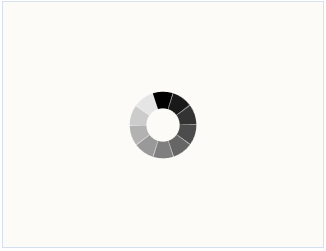
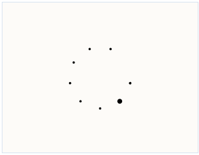
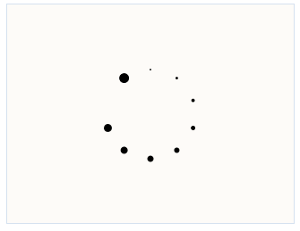
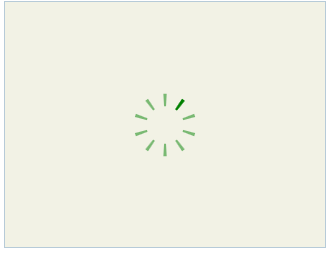

The waiting Pop-up in HTML5 has a couple of features that distinguish it from the ordinary Waiting Pop-up control in MVC tools:
There are 4 in-built shapes for Waiting Pop-up in HTML5. These must be used instead of the in-built images that are used in the ordinary Waiting Pop-up control.
The shapes in question are:
· SquaresCircle
The following image gives an idea as to what this shape looks like:

Figure 341: Square Circle
· BigCircleBall
The BigCircleBall shape looks like this:

Figure 342: BigCircleBall
· BigRoller
The BigRollerl shape looks like this:

Figure 343: BigRoller
· IndicatorBig2
The following image shows you what this shape looks like:
Figure 344: IndicatorBig2
Note: Custom shapes are not supported.
You can enable the Shapes in the Waiting pop-up using HTML5 if you follow either of the procedures given below:
Using Builder:
1. In View, create the target element over which the waiting pop-up is to be displayed.
2. Invoke the waiting pop-up helper followed by the TargetId method with the ID of the target element as an argument.
|
[ASPX] <div style="border: 1px solid #BDD4F0; height: 225px; width: 300px;" id="updatePanel"> </div>
<%=Html.Syncfusion().WaitingPopup("mypopup") .AutoDisplay(true) .EnableHTML5(true) .ShapeHeight(200) .ShapeWidth(200) .Shape(WaitingPopupShape.IndicatorBig2) .TargetId("updatePanel") %>
|
|
[Razor] <div style="border: 1px solid #BDD4F0; height: 225px; width: 300px;" id="updatePanel"> </div>
@{ Html.Syncfusion().WaitingPopup("mypopup") .AutoDisplay(true) .EnableHTML5(true) .ShapeHeight(200) .ShapeWidth(200) .Shape(WaitingPopupShape.IndicatorBig2) .TargetId("updatePanel") .Render(); }
|
3. Build and run the application.
Using Properties Model
1. In the controller, create an instance of WaitingPopupModel.
2. Define TargetId and pass the instance through the view-specific data to the view.
|
[Controller] public ActionResult Index() { WaitingPopupModel model = new WaitingPopupModel(); model.AutoDisplay = true; model.EnableHTML5 = true; model.Shape = WaitingPopupShape.IndicatorBig2; model.ShapeHeight = 200; model.ShapeWidth = 200; model.TargetId = "updatePanel"; ViewData["mypopup"] = model; return View(); }
|
3. In View, create the target element over which the waiting pop-up is to be displayed.
4. Invoke the waiting pop-up helper with view data key as the control ID.
|
[ASPX] <div style="border: 1px solid #BDD4F0; height: 225px; width: 300px;" id="updatePanel"> </div>
<%=Html.Syncfusion().WaitingPopup("mypopup")%>
|
|
[Razor] <div style="border: 1px solid #BDD4F0; height: 225px; width: 300px;" id="updatePanel"> </div>
@{ Html.Syncfusion().WaitingPopup("mypopup") .Render(); }
|
5. Build and run the application.
After performing the above steps, you can use the in-built shapes for the waiting pop-up in HTML5. The following figure shows the output of the waiting pop-up control in HTML5, with one of the in-built shapes:
Figure 345: Waiting pop-up with the IndicatorBig2 shape
You can customize the color, height, and width of all the
in-built shapes for Waiting Pop-up in HTML5, excluding that of
SquareCircle.
For this shape, you will be able to customize the dimensions
alone, and not its color.
You can customize the appearance of the in-built shapes using either one of the following procedures:
Using Builder
1. In View, create the target element over which the waiting pop-up is to be displayed.
2. Invoke the waiting pop-up helper followed by the TargetId method with the ID of the target element as an argument.
|
[ASPX] <div style="border: 1px solid #BDD4F0; height: 225px; width: 300px;" id="updatePanel"> </div>
<%=Html.Syncfusion().WaitingPopup("mypopup") .AutoDisplay(true) .EnableHTML5(true) .ShapeHeight(200) .ShapeWidth(200) .Shape(WaitingPopupShape.IndicatorBig2) .ShapeColor("green") .BackgroundColor(System.Drawing.Color.Olive) .Transparency(1) .TargetId("updatePanel") %>
|
|
[Razor] <div style="border: 1px solid #BDD4F0; height: 225px; width: 300px;" id="updatePanel"> </div>
@{ Html.Syncfusion().WaitingPopup("mypopup") .AutoDisplay(true) .EnableHTML5(true) .ShapeHeight(200) .ShapeWidth(200) .Shape(WaitingPopupShape.IndicatorBig2) .ShapeColor("green") .BackgroundColor(System.Drawing.Color.Olive) .Transparency(1) .TargetId("updatePanel") .Render(); }
|
3. Build and run the application.
Using Properties Model
1. In the controller, create an instance of WaitingPopupModel.
2. Define TargetId and pass the instance through the view-specific data to the view.
|
[Controller] public ActionResult Index() { WaitingPopupModel model = new WaitingPopupModel(); model.AutoDisplay = true; model.EnableHTML5 = true; model.Shape = WaitingPopupShape.IndicatorBig2; model.ShapeColor = "green"; model.ShapeHeight = 200; model.ShapeWidth = 200; model .BackgroundColor = System.Drawing.Color.Olive; model .Transparency = 1; model.TargetId = "updatePanel"; ViewData["mypopup"] = model; return View(); }
|
3. In View, create the target element over which the waiting pop-up is to be displayed.
4. Invoke the waiting pop-up helper with view data key as the control ID.
|
[ASPX] <div style="border: 1px solid #BDD4F0; height: 225px; width: 300px;" id="updatePanel"> </div>
<%=Html.Syncfusion().WaitingPopup("mypopup")%>
|
|
[Razor] <div style="border: 1px solid #BDD4F0; height: 225px; width: 300px;" id="updatePanel"> </div>
@{ Html.Syncfusion().WaitingPopup("mypopup") .Render(); }
|
After performing the above steps, the waiting pop-up in HTML5 will be customized in your MVC application.
The following figure shows the output of the customized waiting pop-up control in HTML5:

Figure 346: Waiting pop-up in HTML 5 with a customized shape